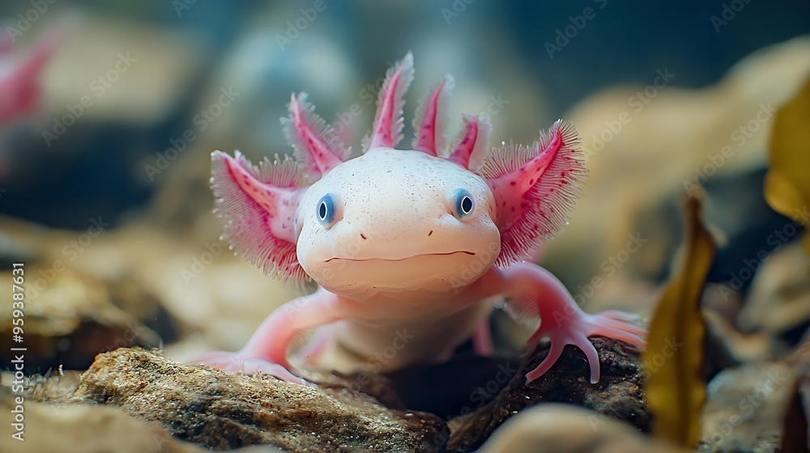

Amphibien nocturne reconnaissable à son corps noir tacheté de jaune...
La salamandre est un amphibien à la peau lisse et humide, appartenant à l'ordre des urodèles, présent principalement en Europe, en Amérique du Nord et en Asie.
La salamandre est un amphibien à la peau lisse et humide, appartenant à l'ordre des urodèles, présent principalement en Europe, en Amérique du Nord et en Asie.
Certaines espèces, comme la salamandre de feu, produisent des sécrétions cutanées toxiques qui les protègent efficacement contre les prédateurs, leur donnant une défense chimique naturelle.
Ces animaux sont des bio-indicateurs environnementaux très sensibles, leur peau perméable les rendant particulièrement vulnérables aux changements de leur écosystème et à la pollution.
Contrairement aux idées reçues, les salamandres ne vivent pas uniquement dans le feu - ce mythe provient de leur capacité à survivre dans des environnements chauds et à résister temporairement aux flammes, mais elles préfèrent généralement les milieux humides et forestiers.

Axolot (Ambystoma mexicanum)
Créature néoténique fascinante conservant ses caractéristiques larvaires...
L'axolotl (Ambystoma mexicanum) est une salamandre aquatique endémique des lacs de Mexico, en particulier du lac de Xochimilco, aujourd'hui gravement menacée d'extinction.
Capable de régénération extraordinaire, l'axolotl peut reconstituer intégralement des organes perdus, y compris des parties de son cerveau, ce qui en fait un sujet de recherche scientifique majeur.
Contrairement à la plupart des amphibiens, l'axolotl conserve ses branchies tout au long de sa vie, restant à l'état larvaire et vivant exclusivement en milieu aquatique, phénomène appelé néoténie.
Sa coloration peut varier du noir au blanc albinos en passant par le doré, le léopard ou le mélaniste, avec des individus aux caractéristiques génétiques uniques très recherchés par les scientifiques.
Animal mythique de la culture mexicaine, l'axolotl fascine tant par son apparence étrange que par ses capacités biologiques uniques, symbolisant la résilience et la transformation dans plusieurs traditions ancestrales.